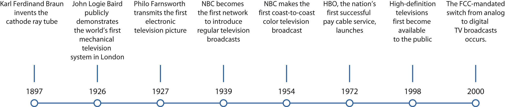

Since replacing radio as the most popular mass medium in the 1950s, television has played such an integral role in modern life that, for some, it is difficult to imagine being without it. Both reflecting and shaping cultural values, television has at times been criticized for its alleged negative influences on children and young people and at other times lauded for its ability to create a common experience for all its viewers. Major world events such as the John F. Kennedy and Martin Luther King assassinations and the Vietnam War in the 1960s, the Challenger shuttle explosion in 1986, the 2001 terrorist attacks on the World Trade Center, and the impact and aftermath of Hurricane Katrina in 2005 have all played out on television, uniting millions of people in shared tragedy and hope. Today, as Internet technology and satellite broadcasting change the way people watch television, the medium continues to evolve, solidifying its position as one of the most important inventions of the 20th century.
Inventors conceived the idea of television long before the technology to create it appeared. Early pioneers speculated that if audio waves could be separated from the electromagnetic spectrum to create radio, so too could television waves be separated to transmit visual images. As early as 1876, Boston civil servant George Carey envisioned complete television systems, putting forward drawings for a “selenium camera” that would enable people to “see by electricity” a year later.“Visionary Period, 1880’s Through 1920’s,” Federal Communications Commission, November 21, 2005, http://www.fcc.gov/omd/history/tv/1880-1929.html
During the late 1800s, several technological developments set the stage for television. The invention of the cathode ray tube (CRT)An electronic display device in which a beam of electrons is focused on a glass viewing screen to create an image. by German physicist Karl Ferdinand Braun in 1897 played a vital role as the forerunner of the television picture tube. Initially created as a scanning device known as the cathode ray oscilloscope, the CRT effectively combined the principles of the camera and electricity. It had a florescent screen that emitted a visible light (in the form of images) when struck by a beam of electrons. The other key invention during the 1880s was the mechanical scanner system. Created by German inventor Paul Nipkow, the scanning diskA large, flat metal disk with perforations arranged in a spiral pattern used as a rotating camera in early television models. was a large, flat metal disk with a series of small perforations arranged in a spiral pattern. As the disk rotated, light passed through the holes, separating pictures into pinpoints of light that could be transmitted as a series of electronic lines. The number of scanned lines equaled the number of perforations, and each rotation of the disk produced a television frame. Nipkow’s mechanical disk served as the foundation for experiments on the transmission of visual images for several decades.
In 1907, Russian scientist Boris Rosing used both the CRT and the mechanical scanner system in an experimental television system. With the CRT in the receiver, he used focused electron beams to display images, transmitting crude geometrical patterns onto the television screen. The mechanical disk system was used as a camera, creating a primitive television system.
Figure 9.1

Two key inventions in the 1880s paved the way for television to emerge: the cathode ray tube and the mechanical disk system.
From the early experiments with visual transmissions, two types of television systems came into existence: mechanical television and electronic television. Mechanical televisionA television system that used mechanical moving parts to capture and display images. Mechanical television was phased out during the 1930s in favor of electronic television. developed out of Nipkow’s disk system and was pioneered by British inventor John Logie Baird. In 1926, Baird gave the world’s first public demonstration of a television system at Selfridge’s department store in London. He used mechanical rotating disks to scan moving images into electrical impulses, which were transmitted by cable to a screen. Here they showed up as a low-resolution pattern of light and dark. Baird’s first television program showed the heads of two ventriloquist dummies, which he operated in front of the camera apparatus out of the audience’s sight. In 1928, Baird extended his system by transmitting a signal between London and New York. The following year, the British Broadcasting Corporation (BBC) adopted his mechanical system, and by 1932, Baird had developed the first commercially viable television system and sold 10,000 sets. Despite its initial success, mechanical television had several technical limitations. Engineers could get no more than about 240 lines of resolution, meaning images would always be slightly fuzzy (most modern televisions produce images of more than 600 lines of resolution). The use of a spinning disk also limited the number of new pictures that could be seen per second, resulting in excessive flickering. The mechanical aspect of television proved to be a disadvantage that required fixing in order for the technology to move forward.
At the same time Baird (and, separately, American inventor Charles Jenkins) was developing the mechanical model, other inventors were working on an electronic televisionAll-electronic television system that scanned images using an electronic camera and received images by cathode ray tube. Electronic television replaced mechanical television in the 1930s. system based on the CRT. While working on his father’s farm, Idaho teenager Philo Farnsworth realized that an electronic beam could scan a picture in horizontal lines, reproducing the image almost instantaneously. In 1927, Farnsworth transmitted the first all-electronic television picture by rotating a single straight line scratched onto a square piece of painted glass by 90 degrees.
Farnsworth barely profited from his invention; during World War II, the government suspended sales of television sets, and by the time the war ended, Farnsworth’s original patents were close to expiring. However, following the war, many of his key patents were modified by RCA and were widely applied in broadcasting to improve television picture quality.
Figure 9.2

The low image resolution of John Logie Baird’s mechanical television was a major disadvantage that led to the technology’s replacement by electronic television systems.
Having coexisted for several years, electronic television sets eventually began to replace mechanical systems. With better picture quality, no noise, a more compact size, and fewer visual limitations, the electronic system was far superior to its predecessor and rapidly improving. By 1939, the last mechanical television broadcasts in the United States had been replaced with electronic broadcasts.
Television broadcasting began as early as 1928, when the Federal Radio Commission authorized inventor Charles Jenkins to broadcast from W3XK, an experimental station in the Maryland suburbs of Washington, DC. Silhouette images from motion picture films were broadcast to the general public on a regular basis, at a resolution of just 48 lines. Similar experimental stations ran broadcasts throughout the early 1930s. In 1939, RCA subsidiary NBC (National Broadcasting Company) became the first network to introduce regular television broadcasts, transmitting its inaugural telecast of the opening ceremonies at the New York World’s Fair. The station’s initial broadcasts transmitted to just 400 television sets in the New York area, with an audience of 5,000 to 8,000 people.Lenox Lohr, Television Broadcasting (New York: McGraw Hill, 1940).
Television was initially available only to the privileged few, with sets ranging from $200 to $600—a hefty sum in the 1930s, when the average annual salary was $1,368.Library, Lone Star College: Kinwood, “American Cultural History 1930–1939,” http://kclibrary.lonestar.edu/decade30.html. RCA offered four types of television receivers, which were sold in high-end department stores such as Macy’s and Bloomingdale’s, and received channels 1 through 5. Early receivers were a fraction of the size of modern television sets, featuring 5-, 9-, or 12-inch screens. Television sales prior to World War II were disappointing—an uncertain economic climate, the threat of war, the high cost of a television receiver, and the limited number of programs on offer deterred numerous prospective buyers. Many unsold television sets were put into storage and sold after the war.
NBC was not the only commercial network to emerge in the 1930s. RCA radio rival CBS (Columbia Broadcasting System) also began broadcasting regular programs. So that viewers would not need a separate television set for each individual network, the Federal Communications Commission (FCC) outlined a single technical standard. In 1941, the panel recommended a 525-line system and an image rate of 30 frames per second. It also recommended that all U.S. television sets operate using analog signalsBroadcast signal made of varying radio waves. Analog signals were used to broadcast television programming for 60 years. They were replaced by digital signals in 2009. (broadcast signals made of varying radio waves). Analog signals were replaced by digital signalsSignals transmitted as binary code. Digital signals replaced analog signals as the universal method of transmitting television broadcasts in 2009. (signals transmitted as binary code) in 2009.
With the outbreak of World War II, many companies, including RCA and General Electric, turned their attention to military production. Instead of commercial television sets, they began to churn out military electronic equipment. In addition, the war halted nearly all television broadcasting; many television stations reduced their schedules to around 4 hours per week or went off the air altogether.
Although it did not become available until the 1950s or popular until the 1960s, the technology for producing color television was proposed as early as 1904, and was demonstrated by John Logie Baird in 1928. As with his black-and-white television system, Baird adopted the mechanical method, using a Nipkow scanning disk with three spirals, one for each primary color (red, green, and blue). In 1940, CBS researchers, led by Hungarian television engineer Peter Goldmark, used Baird’s 1928 designs to develop a concept of mechanical color television that could reproduce the color seen by a camera lens.
Following World War II, the National Television System Committee (NTSC) worked to develop an all-electronic color system that was compatible with black-and-white television sets, gaining FCC approval in 1953. A year later, NBC made the first national color broadcast when it telecast the Tournament of Roses Parade. Despite the television industry’s support for the new technology, it would be another 10 years before color television gained widespread popularity in the United States, and black-and-white television sets outnumbered color television sets until 1972.John Klooster, Icons of Invention: The Makers of the Modern World from Gutenberg to Gates (Santa Barbara, CA: ABC-CLIO, 2009), 442.
Figure 9.3

During the so-called “golden age” of television, the percentage of U.S. households that owned a television set rose from 9 percent in 1950 to 95.3 percent in 1970.
The 1950s proved to be the golden age of television, during which the medium experienced massive growth in popularity. Mass-production advances made during World War II substantially lowered the cost of purchasing a set, making television accessible to the masses. In 1945, there were fewer than 10,000 television sets in the United States. By 1950, this figure had soared to around 6 million, and by 1960 more than 60 million television sets had been sold.World Book Encyclopedia (2003), s.v. “Television.” Many of the early television program formats were based on network radio shows and did not take advantage of the potential offered by the new medium. For example, newscasters simply read the news as they would have during a radio broadcast, and the network relied on newsreel companies to provide footage of news events. However, during the early 1950s, television programming began to branch out from radio broadcasting, borrowing from theater to create acclaimed dramatic anthologies such as Playhouse 90 (1956) and The U.S. Steel Hour (1953) and producing quality news film to accompany coverage of daily events.
Two new types of programs—the magazine format and the television spectacular—played an important role in helping the networks gain control over the content of their broadcasts. Early television programs were developed and produced by a single sponsor, which gave the sponsor a large amount of control over the content of the show. By increasing program length from the standard 15-minute radio show to 30 minutes or longer, the networks substantially increased advertising costs for program sponsors, making it prohibitive for a single sponsor. Magazine programs such as the Today show and The Tonight Show, which premiered in the early 1950s, featured multiple segments and ran for several hours. They were also screened on a daily, rather than weekly, basis, drastically increasing advertising costs. As a result, the networks began to sell spot advertisements that ran for 30 or 60 seconds. Similarly, the television spectacular (now known as the television special) featured lengthy music-variety shows that were sponsored by multiple advertisers.
Figure 9.4

ABC’s Who Wants to Be a Millionaire brought the quiz show back to prime-time television after a 40-year absence.
In the mid-1950s, the networks brought back the radio quiz-show genre. Inexpensive and easy to produce, the trend caught on, and by the end of the 1957–1958 season, 22 quiz shows were being aired on network television, including CBS’s $64,000 Question. Shorter than some of the new types of programs, quiz shows enabled single corporate sponsors to have their names displayed on the set throughout the show. The popularity of the quiz-show genre plunged at the end of the decade, however, when it was discovered that most of the shows were rigged. Producers provided some contestants with the answers to the questions in order to pick and choose the most likable or controversial candidates. When a slew of contestants accused the show Dotto of being fixed in 1958, the networks rapidly dropped 20 quiz shows. A New York grand jury probe and a 1959 congressional investigation effectively ended prime-time quiz shows for 40 years, until ABC revived the genre with its launch of Who Wants to Be a Millionaire in 1999.William Boddy, “The Seven Dwarfs and the Money Grubbers,” in Logics of Television: Essays in Cultural Criticism, ed. Patricia Mellencamp (Bloomington, IN: Indiana University Press, 1990), 98–116.
Formerly known as Community Antenna Television, or CATV, cable televisionA system of providing television and other media services to consumers via coaxial cable. Subscribers are connected through a central community antenna, which picks up satellite signals for distribution. was originally developed in the 1940s in remote or mountainous areas, including in Arkansas, Oregon, and Pennsylvania, to enhance poor reception of regular television signals. Cable antennas were erected on mountains or other high points, and homes connected to the towers would receive broadcast signals.
In the late 1950s, cable operators began to experiment with microwave to bring signals from distant cities. Taking advantage of their ability to receive long-distance broadcast signals, operators branched out from providing a local community service and began focusing on offering consumers more extensive programming choices. Rural parts of Pennsylvania, which had only three channels (one for each network), soon had more than double the original number of channels as operators began to import programs from independent stations in New York and Philadelphia. The wider variety of channels and clearer reception the service offered soon attracted viewers from urban areas. By 1962, nearly 800 cable systems were operational, serving 850,000 subscribers.
Figure 9.5
The Evolution of Television
Cable’s exponential growth was viewed as competition by local television stations, and broadcasters campaigned for the FCC to step in. The FCC responded by placing restrictions on the ability of cable systems to import signals from distant stations, which froze the development of cable television in major markets until the early 1970s. When gradual deregulation began to loosen the restrictions, cable operator Service Electric launched the service that would change the face of the cable television industry—pay TVSubscription-based television service in which consumers pay a fee to the program provider.. The 1972 Home Box Office (HBO) venture, in which customers paid a subscription fee to access premium cable television shows and video-on-demand products, was the nation’s first successful pay cable service. HBO’s use of a satellite to distribute its programming made the network available throughout the United States. This gave it an advantage over the microwave-distributed services, and other cable providers quickly followed suit. Further deregulation provided by the 1984 Cable Act enabled the industry to expand even further, and by the end of the 1980s, nearly 53 million households subscribed to cable television (see Section 6.3 "Current Popular Trends in the Music Industry"). In the 1990s, cable operators upgraded their systems by building higher-capacity hybrid networks of fiber-optic and coaxial cable. These broadbandA high-speed network connection that can carry data, voice, television, and video at higher speeds and in greater quantities than traditional connections. networks provide a multichannel television service, along with telephone, high-speed Internet, and advanced digital video services, using a single wire.
Following the FCC standards set out during the early 1940s, television sets received programs via analog signals made of radio waves. The analog signal reached television sets through three different methods: over the airwaves, through a cable wire, or by satellite transmission. Although the system remained in place for more than 60 years, it had several disadvantages. Analog systems were prone to static and distortion, resulting in a far poorer picture quality than films shown in movie theaters. As television sets grew increasingly larger, the limited resolution made scan lines painfully obvious, reducing the clarity of the image. Companies around the world, most notably in Japan, began to develop technology that provided newer, better-quality television formats, and the broadcasting industry began to lobby the FCC to create a committee to study the desirability and impact of switching to digital televisionTelevision that uses signals that translate television images and sounds into binary code. Digital television replaced analog television in 2009.. A more efficient and flexible form of broadcast technology, digital television uses signals that translate television images and sounds into binary code, working in much the same way as a computer. This means they require much less frequency space and also provide a far higher quality picture. In 1987, the Advisory Committee on Advanced Television Services began meeting to test various television systems, both analog and digital. The committee ultimately agreed to switch from analog to digital format in 2009, allowing a transition period in which broadcasters could send their signal on both an analog and a digital channel. Once the switch took place, many older analog television sets were unusable without a cable or satellite service or a digital converter. To retain consumers’ access to free over-the-air television, the federal government offered $40 gift cards to people who needed to buy a digital converter, expecting to recoup its costs by auctioning off the old analog broadcast spectrum to wireless companies.Jacques Steinberg, “Converters Signal a New Era for TVs,” New York Times, June 7, 2007, http://www.nytimes.com/2007/06/07/technology/07digital.html. These companies were eager to gain access to the analog spectrum for mobile broadband projects because this frequency band allows signals to travel greater distances and penetrate buildings more easily.
Around the same time the U.S. government was reviewing the options for analog and digital television systems, companies in Japan were developing technology that worked in conjunction with digital signals to create crystal-clear pictures in a wide-screen format. High-definition televisionWide-screen television system with a much higher resolution than standard televisions, creating a cinematic experience for the viewer., or HDTV, attempts to create a heightened sense of realism by providing the viewer with an almost three-dimensional experience. It has a much higher resolution than standard television systems, using around five times as many pixels per frame. First available in 1998, HDTV products were initially extremely expensive, priced between $5,000 and $10,000 per set. However, as with most new technology, prices dropped considerably over the next few years, making HDTV affordable for mainstream shoppers.
As of 2010, nearly half of American viewers are watching television in high definition, the fastest adoption of television technology since the introduction of the VCR in the 1980s.Brian Stelter, “Crystal-Clear, Maybe Mesmerizing,” New York Times, May 23, 2010, http://www.nytimes.com/2010/05/24/business/media/24def.html. The new technology is attracting viewers to watch television for longer periods of time. According to the Nielsen Company, a company that measures television viewership, households with HDTV watch 3 percent more prime-time televisionProgramming screened between the hours of 7 and 11 p.m., when the largest audience is available.—programming screened between 7 and 11 p.m., when the largest audience is available—than their standard-definition counterparts.Brian Stelter, “Crystal-Clear, Maybe Mesmerizing,” New York Times, May 23, 2010, http://www.nytimes.com/2010/05/24/business/media/24def.html. The same report claims that the cinematic experience of HDTV is bringing families back together in the living room in front of the large wide-screen television and out of the kitchen and bedroom, where individuals tend to watch television alone on smaller screens. However, these viewing patterns may change again soon as the Internet plays an increasingly larger role in how people view television programs. The impact of new technologies on television is discussed in much greater detail in Section 9.4 "Influence of New Technologies" of this chapter.
Figure 9.7

Since 1950, the amount of time the average household spends watching television has almost doubled.
Please respond to the following writing prompts. Each response should be a minimum of one paragraph.